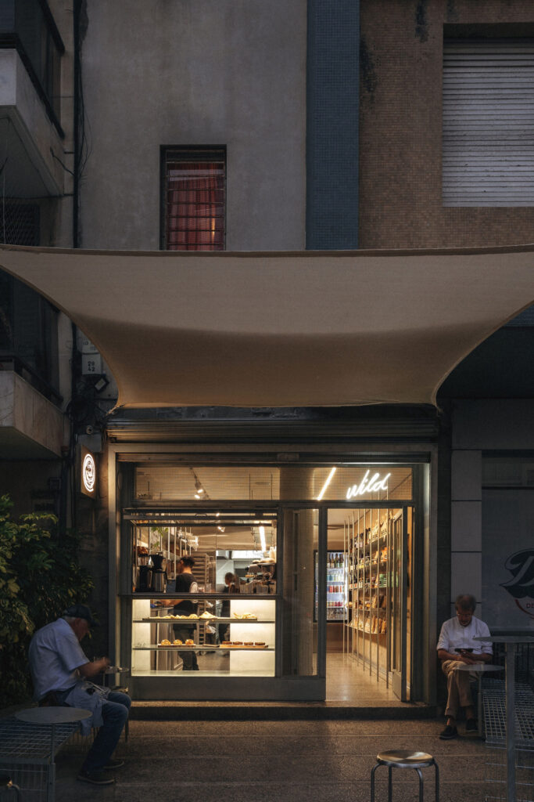

Explore the trendiest Cafes in Uruguay.
Popular Cafes for you to Enjoy
Café Brasilero - A historic café in Montevideo known for its rich coffee and pastries.
Café del Teatro - Located near Teatro Solís, perfect for a pre-show coffee.
Café La Pasiva - Famous for its chivitos and traditional Uruguayan dishes.
Café Paraiso - A modern, nordic spot in the middle of the city.
Café Bar Tabaré - Known for its vibrant ambiance and live music events.
Bar Facal - A classic bar with a rich history and a cozy atmosphere.
Trendiest hotspots on Instagram
Check out these cafes, restaurants, and bars, for a taste of Uruguay's unique culture. Each offers a unique experience, from historic settings to modern vibes.



Upcoming Events
- Montevideo Jazz Festival - March
- Punta del Este Music Festival - April
- Colonia Art Fair - May